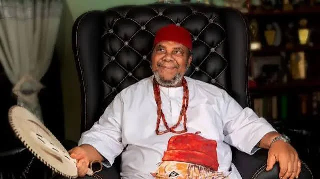

Security & Crime · 25 Nov 2026
Tinubu mourns Pete Edochie, hails late actor’s contribution to Nollywood

President Tinubu mourns veteran actor Pete Edochie, hailing him as a pioneer of Nollywood whose roles promoted Nigerian culture around the world. Read More: https://punchng.com/tinubu-mourns-pete-edochie-hails-late-actors-contribution-to-nollywood/
Multiple independent publishers are reporting on the same development: Tinubu mourns Pete Edochie, hails late actor’s contribution to Nollywood.
The available reports place the development in the Security & Crime category. The accounts were compared for agreement on the central event rather than simply shared names or broad topics.
One of the available reports describes the development this way: President Tinubu mourns veteran actor Pete Edochie, hailing him as a pioneer of Nollywood whose roles promoted Nigerian culture around the world. Read More: https://punchng.com/tinubu-mourns-pete-edochie-hails-late-actors-contribution-to-nollywood/
Readers should consult the linked source reports for additional context, updates and details that may change as the story develops.
Sources
This article was produced by the C. O. Eric AI Newsroom from the cited sources. It is published only after automated evidence and safety checks.